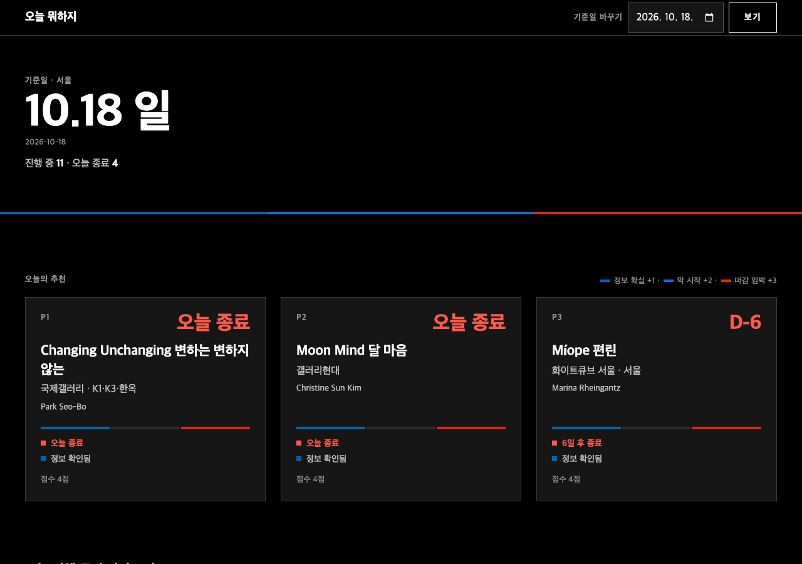
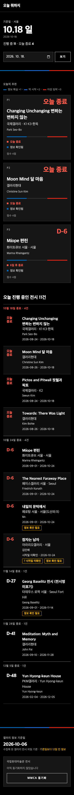

오늘 뭐하지: 디자인 시안 3개 (전시 기관 참조)
기준일 2026-10-18, 데이터는 기준선 앱(run 39119897521)의 /api/today 결과 그대로(진행 중 11건). 참조는 미술관 사이트 12곳의 홈 HTML과 CSS를 받아 색과 글꼴 빈도를 세고 화면을 캡처한 뒤, 서로 가장 다른 셋을 골랐습니다.
기준선: 안 맞았던 것 (bmw-m 레이싱 타이밍 타워)


1단계: 디자인 비교 (C 선택)
A. New Museum 참조
참조 사이트: https://www.newmuseum.org/- 빌린 것
- 검정 바탕, 애시드 라임 거대 글자, 와이드 그로테스크, 라임 테두리 버튼
- 고르기
- 기준선 Top 3 그대로 + 오늘/이번 주/더 오래 묶음
B. Barbican 참조
참조 사이트: https://www.barbican.org.uk/- 빌린 것
- 주황 전면 헤더, 흰 굵은 산세리프, 둥근 6px 버튼, 짙은 푸터
- 고르기
- 쓸 수 있는 시간을 고르면 한 동네 동선(입장권 묶음)
동네와 관람 시간은 시안용 가정입니다.
C. Stedelijk 참조
참조 사이트: https://www.stedelijk.nl/en- 빌린 것
- 거대한 얇은 글자, 5px 검정 괘선 행, 형광 초록 선택, 기울어진 노랑 스티커
- 고르기
- 질문 하나: 오늘 아니면 못 봄 / 이번 주 / 급하지 않음 / 전부
고르는 방식 3가지
1. 추천 Top 3
- 사용자
- 할 일 없음
- 규칙
- 기준선 F4 점수 상위 3개, 갤러리당 1개. 아래에 오늘/이번 주/더 오래 묶음
- 바꿀 곳
- Design만
2. 시간 동선
- 사용자
- 2시간/반나절/하루 선택
- 규칙
- 오늘 닫는 전시가 많은 동네부터, 시간 안에 들어가는 만큼. 같은 갤러리도 포함
- 바꿀 곳
- Design + Plan F4 + 데이터(동네, 관람 시간)
동네와 관람 시간은 시안용 가정입니다.
3. 질문형
- 사용자
- 오늘 아니면 못 봄 / 이번 주 / 급하지 않음 / 전부
- 규칙
- 점수 없이 남은 날로 나눔. 정보 확인된 것만 거르기
- 바꿀 곳
- Design + Plan F4
디자인 3 × 고르는 방식 3 = 9개
고르는 규칙은 logic.js 하나를 A, B가 함께 쓴다(C는 같은 규칙을 페이지 안에 둠). 디자인별로 다른 것은 화면 구성뿐이다.
참조 후보 12곳 실측 요약
| 사이트 | 많이 쓰인 색 (CSS 빈도) | 글꼴 | 판단 |
|---|---|---|---|
| New Museum | #000 #fff #00b2ff #beff00 | Akkurat, Neographik | 채택 A |
| Barbican | #333 #d14900 #fff #5778a2 | Supreme Black | 채택 B |
| Stedelijk | #fff #0a0a0a #ebeae8 #d62348, 화면에 #22ff06 #ffd511 | Union | 채택 C |
| Whitney | #000 #ccc #fff #d7ff2d | Neue Haas Grotesk | Stedelijk와 겹침(흰 바탕 흑백) |
| ICA | #fff #000 #ffff00 #ff0000 #0000ff | OCR-B, Computer Modern | 후보. 원색과 타자기 글꼴 |
| Palais de Tokyo | #fff #000 #fff8a5 | Silka, Gaffer(스텐실) | 후보. A와 겹침(검정) |
| Kunsthalle Basel | #333 #1199ff #fff | Suisse, KB Rhymes | 사진 중심이라 이미지 없는 앱에 약함 |
| MoMA | #000 #fff #999 | MoMA Sans | 흑백 위주 |
| Serpentine, Walker, 아트선재, 리움 | 워드프레스 기본색이거나 추출 실패 | - | 판단 보류 |
이 방향을 고르면 mvpgen에서 바꿀 곳
| 바꿀 곳 | 내용 |
|---|---|
| design-library | 지금 86개는 모두 일반 브랜드(자동차, SaaS 등). 전시 기관 DESIGN.md를 추가하거나, 분야에 맞는 후보를 뽑는 규칙 필요 |
| Design 프롬프트 | "분야가 다른 후보" 규칙이 레이싱 결과를 만든 원인. 같은 분야 안의 낯선 표현을 허용하도록 수정 |
| Plan(spec F4) | B, C의 고르는 방식은 Design이 아니라 Plan에서 정해야 함 |
글꼴은 대체품입니다: Neographik 대신 Archivo(와이드) + Black Han Sans, Supreme 대신 Pretendard/Outfit, Union 대신 Helvetica Neue/Pretendard. 웹 글꼴은 CDN에서 불러오므로 실제 앱에서는 앱에 넣어야 합니다. 상세 화면 링크는 동작하지 않습니다.